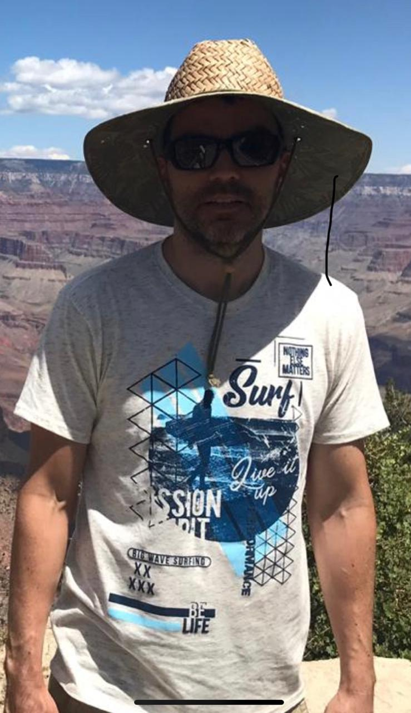

<!DOCTYPE html>
<html lang="en">
<head>
    <meta charset="UTF-8">
    <meta name="viewport" content="width=device-width, initial-scale=1.0">
    <title>Mi primera pagina web</title>
</head>
<body>

</body>
</html>

<!DOCTYPE html>
<html lang="es">

<head>
    <meta charset="UTF-8">
    <meta name="viewport" content="width=device-width, initial-scale=1.0">
    <meta http-equiv="X-UA-Compatible" content="ie=edge">
    <title>Sptrint 1 - Ciclo 3</title>
    <link rel="stylesheet" href="style.css">
    <script src="https://kit.fontawesome.com/a076d05399.js"></script>


</head>

    <!-- inicio header -->
    <header class="header">

        <!-- menu 4 opciones -->
        <section class="barra-superior">

            <!-- titulo de la pagina -->
            <div class="titulo-principal">

                <h1>Sprint 1 ciclo3</h1>

            </div>

            <nav class="navagacion">
                <ul class="menu-principal">
                    <li class="menu-principal__item"><a href="#" class="nav-element"> Inicio </a></li>
                    <li class="menu-principal__item"><a href="#services"class="nav-element"> Servicios </a></li>
                    <li class="menu-principal__item"><a href="#news"class="nav-element"> Noticias </a></li>
                    <li class="menu-principal__item"><a href="#team" class="nav-element"> Equipo </a></li>
                    
                </ul>

            </nav>
            
        </section>
        <!-- fin menu 4 opciones  -->

        <!-- banner -->
        <section class="banner">
            


        </section>
        <!-- fin banner -->

    </header>
    <!-- fin header -->

    <!-- inicio main -->
    <main>

         <!-- titulo de servicios -->

        <section>
            <div class="titulo-servicios">

                <h2>Sección de servicios</h2>

            </div>
        </section>

        <!-- servicios -->
        <section id="services" class="servicios">

           
            <div class="servicios__contenedor">
                
                <p>Stack Overflow presta un servicio gratuito donde los mismos usuarios responden las preguntas de otros programadores, convirtiendose la principal pagina de apoyo para los programadores a nivel mundial​</p>
                <a href="https://stackoverflow.com/">Abrir stackoverflow >></a>
            </div>
            <div class="servicios__contenedor">
                
                <p>Presta un servicio gratuito para alojar proyectos utilizando el sistema de control de versiones Git. Es la plataforma mas popularEl código se almacena de de desarrollo colaborativo de software mas popular a nivel mundial.</p>
                <a href="https://github.com/">Abrir Github >></a>
            </div>
            <div class="servicios__contenedor">
                
                <p>Searchcode presta un servicio de búsqueda de código fuente gratuito. Los fragmentos de código y los repositorios de código abierto (software gratuito) están indexados y se pueden buscar.</p>
                <a href="https://searchcode.com/">Abrir searchcode >></a>
            </div>


        </section>
        <!-- fin servicios -->


        <section>
            <div class="titulo-noticias">

                <h2>Sección de noticias</h2>

            </div>
        </section>


        <!-- noticias -->
        <section id="news" class="noticias">
            
            <!-- Primer Bloque Noticias -->
            <div>
                <div class=noticia>
                    
                    <div class=noticia__contenedor>
                        <h3>Microsoft anuncia nuevos pasos para proteger los datos</h3>
                        <p>Las nuevas protecciones Defending Your Data incluyen un compromiso contractual para desafiar las solicitudes gubernamentales de datos, así como un compromiso monetario.</p>
                        <a href="https://sdtimes.com/data-protection/microsoft-announces-new-steps-to-protect-data/">Leer noticia completa >></a>
                    </div>
                </div>

                <div class=noticia>
                    
                    <div class=noticia__contenedor>
                        <h3>Ganadores de los premios de innovación Topcoder</h3>
                        <p>La empresa de crowdsourcing Topcoder anunció a los ganadores de sus premios a la innovación 2020, que fueron diseñados para reconocer a los clientes y las personas que realizaron un trabajo excepcional en la plataforma Topcoder y dentro de la comunidad.</p>
                        <a href="https://sdtimes.com/softwaredev/topcoder-announces-its-2020-innovation-award-winners/">Leer noticia completa >></a>
                    </div>    
                
                </div>

            </div>
            

            <!-- Segundo Bloque Noticias -->
            <div>

                <div class=noticia>
                    
                    <div class=noticia__contenedor>
                        <h3>Scrum, NoSQL y DataStax, presentan novedades para el 2020</h3>
                        <p>Actualización de la guía Scrum, Aerospike agrega expresiones para NoSQL Database 5 y DataStax lanzó K8ssandra</p>
                        <a href="https://sdtimes.com/softwaredev/sd-times-news-digest-scrum-guide-update-aerospike-adds-expressions-for-nosql-database-5-and-datastax-released-k8ssandra/">Leer noticia completa >></a>
                    </div>
                </div>
                <div class=noticia>
                    
                    <div class=noticia__contenedor>
                        <h3>Las cuentas de Github se integran a VS</h3>
                        <p>Microsoft ha anunciado que Visual Studio 2019 ahora viene con una experiencia de cuenta de GitHub totalmente integrada, se puede agregar cuentas de GitHub directamente desde Visual Studio.</p>
                        <a href="https://sdtimes.com/msft/github-accounts-now-integrated-into-visual-studio-2019/">Leer noticia completa >></a>
                    </div>
                
                </div>

            </div>

        </section>
        <!-- fin noticias -->

        
        <div class="titulo-equipo">

            <h2>Sección de equipo</h2>

        </div>

        <!-- miembros del equipos -->
        <section id="team" class="miembros">
            <div class=miembros__equipo>
                
                <h2>Federico Ospina</h2>
                <p>Un Ingeniero Administador que quiere ser un DataScience.</p>
            </div>
            <div class=miembros__equipo>
                
                <h2>Luis Francisco Parra</h2>
                <p>Universidad los Libertadores, Edad 37, Motociclismo de ruta</p>
            </div>


        </section>
        <!-- fin miembros del equipo -->
        


    </main>
    <!-- fin main -->

    <section>

        <div class="titulo-footer">

            <h4 class="titulo-footer__section">Sección Footer</h4>
    
        </div>
    </section>

    <!-- inicio footer -->
    <footer class="footer">
      

        <div class="footer__texto">
            <h5 class="footer__texto--1">Reto de html y css del ciclo 3 de MisionTic2022</h5>

            <nav>
                <a class="footer__texto--1" href="https://github.com/fedeospina/Semana-1-94/tree/dev"> Github:github.com/fedeospina/Semana-1-94/tree/dev </a>
            </nav>
            
        </div>

        <div>
            <h5 class=contactofed>Federico Ospina, ospina7903@gmail.com, full stack</h5>
            <h5 class=contactofra>Luis Francisco Parra, pacho20lucho@gmail.com, full stack</h5>
        </div>


    </footer>
    <!-- fin footer -->


</html>
